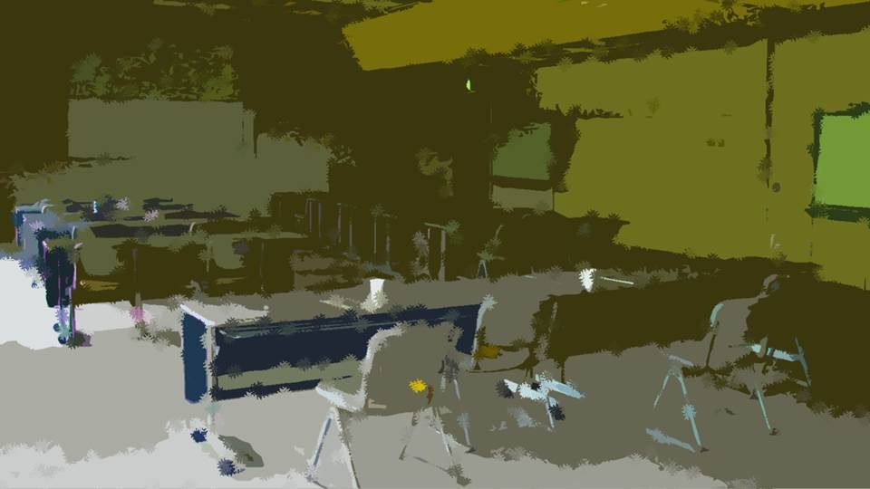

Script 000003B4


"Now then, please look at the materials in front of you.
Here in Motoki-cho, the crime rate is by far the lowest in the whole country.
The number of juvenile crimes committed last year was five in total.
All five were minor offenses such as shoplifting and graffiti, and in every case a settlement has been reached with the victims."
"Furthermore, the juvenile reoffending rate is also extremely low: over the past 10 years the reoffending rate has been 3%, and these too were minor.
This is thought to be largely due to the character of the area and to residents working together as one to foster young people."
"However, this gives rise to two concerns.
The first is that, because of the low crime rate, at present very few places are equipped with security cameras or other crime-prevention equipment.
The number of security cameras this station has installed in town, too, currently stands at only 12, all on this station's premises.
Since a lack of video material could make investigations difficult should a crime occur in the future, rather than resting on the low crime rate, we will submit a request to purchase crime-prevention equipment within this year."
"The second is that, because of the low number of juvenile crimes, there is a noticeable tendency for young people to go out at night.
A major factor in this is parents' low awareness of crime prevention, and it is not uncommon to see young people at convenience stores or in the busy downtown areas at night."
"For the time being, this station will limit itself to asking young people to refrain from going out at night whenever they are found, and within this year we will take the measure of having the town's school principals urge young people to refrain from going out at night.
That concludes my report."

"Assistant Inspector Ise was really fired up giving that report, wasn't he..."
―Of course, the Assistant Inspector is Motoki-cho's number-one devotee of pretty girls.
"Huh? Seriously!?"
―You didn't know? It's famous, Assistant Inspector Ise's lolicon taste.
"Aww... and I had my eye on the Assistant Inspector... Such a shock..."
―Of course, the Assistant Inspector is Motoki-cho's number-one devotee of pretty girls.
"Huh? Seriously!?"
―You didn't know? It's famous, Assistant Inspector Ise's lolicon taste.
"Aww... and I had my eye on the Assistant Inspector... Such a shock..."
―The Assistant Inspector, though... good-looking, good at his job, young...
If only his tastes were normal, he'd be perfect...
"Ahh, really, hearing the backstory to that juvenile crime presentation, I'm totally disillusioned..."
―Now, now. The way the Assistant Inspector puts his all into deterring juvenile crime like that, that's a good thing, isn't it?
"That's true, but... Still, if it came to it, wouldn't the Assistant Inspector do something?"
"A devotee of pretty girls, huh... Me, I'd rather have someone older..."
"Ahh, really, hearing the backstory to that juvenile crime presentation, I'm totally disillusioned..."
―Now, now. The way the Assistant Inspector puts his all into deterring juvenile crime like that, that's a good thing, isn't it?
"That's true, but... Still, if it came to it, wouldn't the Assistant Inspector do something?"
"A devotee of pretty girls, huh... Me, I'd rather have someone older..."
"So you like them older?"
"W-why, if it isn't Assistant Inspector Ise!"
―Thank you for your hard work, sir, sir!
"W-why, if it isn't Assistant Inspector Ise!"
―Thank you for your hard work, sir, sir!
Listen! Pretty girls, as a rule, are to be admired, and laying a hand on them must never, ever happen! This is the fundamental principle of the Motoki Pretty Girl Appreciation Society! Sexual crimes against pretty girls, all the more so, are beyond outrageous! Our activities aim at admiring pretty girls and, at the same time, at the healthy upbringing of pretty girls! Even if you happen to meet a pretty girl, taking photos or videos without permission is never allowed!